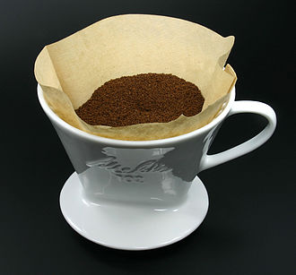
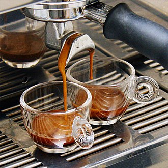

추출에 따른 커피 분류
드립커피

드립 커피(Drip Coffee)란 볶아서 갈은 커피 콩을 거름 장치에 담고, 그 위에 물을 부어 만드는 커피로 보통 원두커피로 불린다. 드립 브류(Drip brew)라 함은 이와 같이 커피를 만드는 방법을 일컫는다. 거름 장치를 필터라고도 하기 때문에 드립 커피를 영어로 filtered coffee라고도 한다
콜드브루

콜드 브루 커피는 찬 물로 긴 시간에 걸쳐 추출한 커피이다. 일본식 영어인 더치 커피(Dutch coffee)는 '네덜란드의' '네덜란드 방식의' 커피라는 의미이다. 일본에서는 더치커피의 유래가 대항해 시절에 네덜란드 상인들이 동남아 지역에서 커피를 유럽으로 실어나르는 동안에, 장기간에 걸친 항해 중에 커피를 먹기 위해서 고안한 것이라 알려져 있지만, 관련된 문헌은 전혀 없으며 사실상 아무런 역사적 근거가 없다. 이러한 더치커피의 유래는 일본에서 마케팅을 이용해 만든 이야기로 실제로 네덜란드에서 '더치 커피'라 하면 알아듣지 못한다. 다른 커피 추출법과 달리 찬물로 추출하기 때문에 카페인이 적거나 없다고 알려져 있지만 실제로는 일반 커피보다 카페인이 많을 수도 있다.
추출커피(머신)
기계를 이용해 고압·고온 하의 물을 미세하게 분쇄한 커피 가루에 가해 추출해내는 고농축 커피이다. 머신 커피라고도 할 수 있다. 에스프레소(카페 에스프레소(이탈리아어: caffè espresso))가 대표적이다. 초창기 추출 커피는 20세기 초반 이탈리아 밀라노 지역에서 개발되었다. 당시 추출 커피는 순수하게 수증기의 압력으로 추출되었다. 1940년대 중반 스프링 피스톤 레버 머신이 개발되어, 오늘날 우리가 알고 있는 형태의 추출 커피가 제조되기 시작하였다. 오늘날에는 대개 대기압의 9~15배의 압력을 가해 에스프레소를 추출한다.